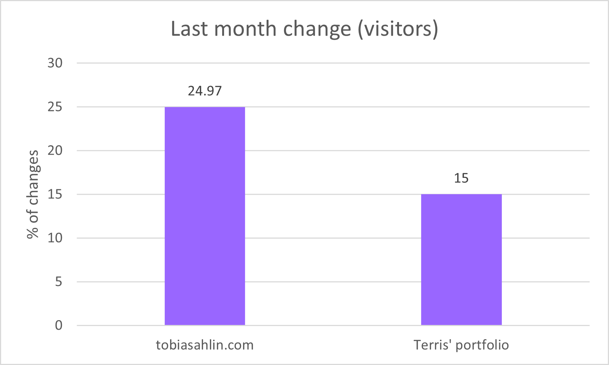

Process and Strategy in Design this Website
Information Architecture
The information architecture chart includes three main elements:
- Homepage
- Subsections
- Footer
Navigation Chart
The next part of planning features the navigation chart - featuring three main types of navigations in this website:
- Structural
- Associate
- Utility
Colours are used to differentiate the types of navigations:
- Structural Navigation:
- Associate Navigation:
- Global Navigation:
- Contextual Navigation:
- Utility Navigation:
Homepage
The homepage delivers strong visual impact to users while also offering links to other pages through introducing them in sections:
- Featured Project
- List of Projects
- More about myself/link to resume
Functionality:
- Clicking on title brings users to main section
- Clicking on images bring users to corresponding pages
- Clicking on "resume" brings users to resume page, "ICCIT & Criminology bring users to UTM website"
Resume
The Resume page features my resume in HTML/CSS/JS format
The resume is divided into sections:
- Qualification Highlights
- Education
- Relevant Professional Experience
- Relevant Volunteer Experience
- Interests
List of Projects
The List of Projects page includes a list of my previous works - including Web Design works and UX Design works
The theme colour of this page is different from others because I wanted users to get attracted to this page by making it stand out from other pages
Functionality:
- Clicking on "Web Design" brings users Web Design section, "UX Design" to UX Design section
Featured Project
The Featured Project features the Startup Company Website Mockup I completed previously in CCT460
Functionality:
- Clicking on bolded titles will expand the collapsed images that corresponds to the title
Macro/Micro Conversion Goals & Rates
Macro Conversion
Enquiry conversions: The main macro conversion goal of this website is to have visitors of the website to contact me (Phone call or Email) after reading through the website, whether it is for business inquires or other topics
(Number of phone calls and email I receive from visitor of the website)
Micro Conversion
Visitor of the website spending at least 1 minute reading my list of projects page
(Average time on list of projects page)
https://tobiasahlin.com/, a Web Design related portfolio website: visitors of the website spend averagely 82 seconds on the website.
In contrast, I expect visitors to spend an average of one minute on my website
Micro Conversion
Visitor of the website navigating to resume and list of projects page after landing on my homepage
(Pages per Visit)
https://tobiasahlin.com/, a Web Design related portfolio website - visitors of the website visits 1.6 pages per visit after landing on the homepage.
For my website, I hope to achieve a pages per visit rate of 2
Micro Conversion
Visitor of the website reading more than one page before leaving
(Bounce Rate)
https://tobiasahlin.com/, a Web Design related portfolio website have an average of 71.1% bounce rate from visitors of the site.
In terms of my website, I am expecting an average of 75% bounce rate
User & System Segments
First time visitors
The first type of segmentation is first-time visitors. Since my goal of creating a portfolio is to attract people in contacting me after viewing my resume and list of projects, targeting first-time visitors to the website would help increase the rate of individuals who are interested in contact me after finish reading through my portfolio
Since last month, the total number of visitors on https://tobiasahlin.com/, a Web Design related portfolio website has increased from 144.1K to 180.1K (24.97%)
(New Visitors)
For my website, I am targeting an 15% increase of new visitors per month
Visitors from Canada
The second type of segmentation is local visitors who are from Canada. Because my goal after graduation is to work in Canada, I am hoping that individuals who reviewed my porfolio and are hiring someone will be willing to give me an opportunity in working in their company.
https://tobiasahlin.com/, a Web Design related portfolio website from the U.S. has a total of 17.57% local visitors (visitors from America)
For my website, my goal is to attract 22% of Canadian visitors
Visitors from Web Design / UX Design background
The third type of segmentation is visitors from Web Design / UX Design background. Due to my other goal of connecting people who shares a similar interest and background as me so that we can take some time and share ideas on how we can improve our website design / ux design skills, the third type of visitor that I am hoping to attract to my website are visitors who have Web Design / UX Design background.

My target visitors of the website are individuals with similar background as me
SEO/SEM & Keyword Plan
Micro Conversion
The general actions taken to ensure that the search engine is well optimized are:
- Simple URL Structure
- Make the website's link crawlable
- Descriptive title for pages
- Balanced mixture of text and images
- All linked links are valid HTML
Images Best Practice
Actions taken to ensure all images follow google's best SEO practice
- Proper use of alt tag
- Device-friendly site
- Clear URL structure for images
- Optimized placement
- All visual contents are relevant to the topic of the page
alt="CCT460 - Startup Company Mockup | Homepage"
Images have no issue showing up properly when in mobile view
All images are placed into "images" folder
Avoids
The following actions are avoided for SEO purposes
- Duplicated contents
- Hidden text or links
- Auto-generated content
- Irrelevant keywords
Keywords
Keywords for Homepage
- Terris Ng
- Portfolio
- University of Toronto student
- UTM student
- Web Design
- UX Design
- Toronto
- Canada
Keywords for Resume Page
- Terris Ng
- Portfolio
- Resume
- University of Toronto student
- UTM student
- Web Design
- UX Design
- Toronto
- Canada
Keywords for Featured Project Page
- Terris Ng
- Portfolio
- List of Projects
- University of Toronto student
- UTM student
- Web Design
- UX Design
- Toronto
- Canada
Keywords for List of Projects
- Terris Ng
- Portfolio
- Projects
- University of Toronto student
- UTM student
- Web Design
- UX Design
- CCT460
- CCT360
- CCT485
- CCT480
- CCT380
- Toronto
- Canada
How are the keywords realted to conversion goals and segments
- By putting my name - "Terris Ng", and "portfolio / page title" it helps attract first-time visitors who are interested in my profile after searching online
(First-time visitors) - Putting "University of Toronto student", "UTM student", "Toronto", "Canada" helps me target local visitors
(Visitors from Canada) - Adding "Web Design", "UX Design" attracts visitors with similar background in these fields as me
(Visitors from Web Design / UX Design background)